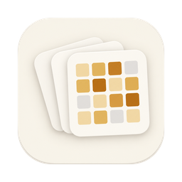
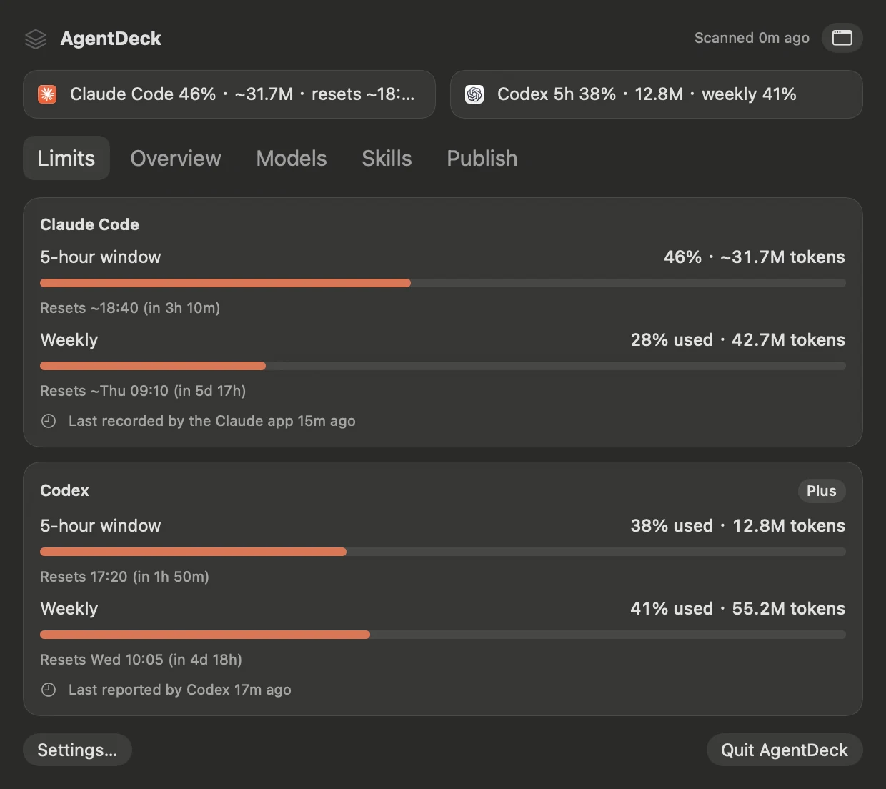
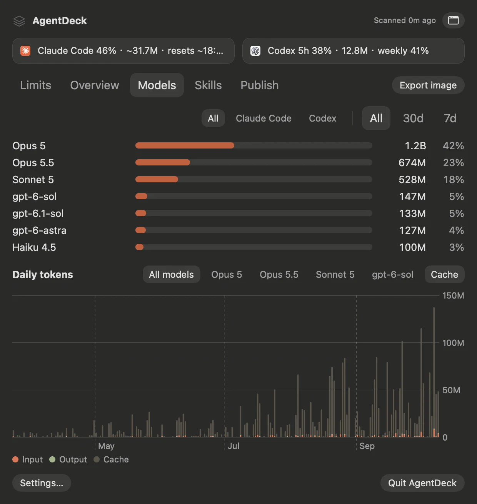
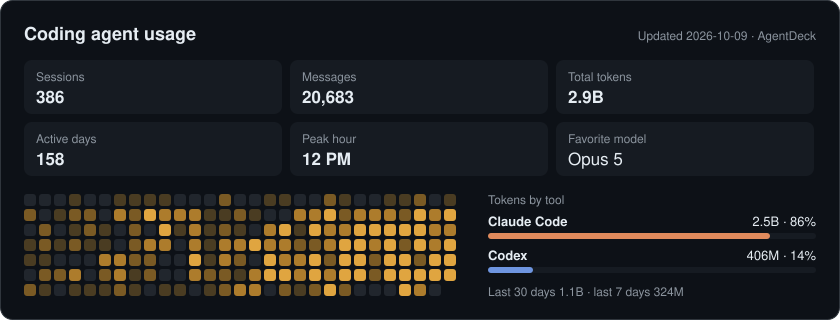
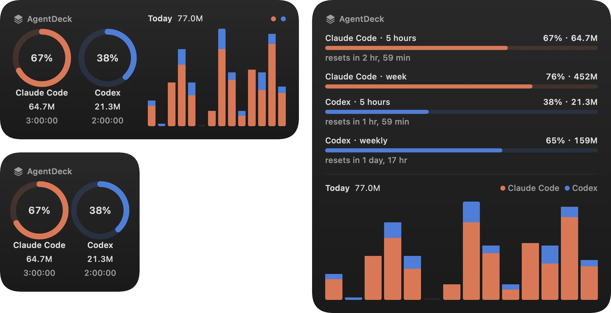
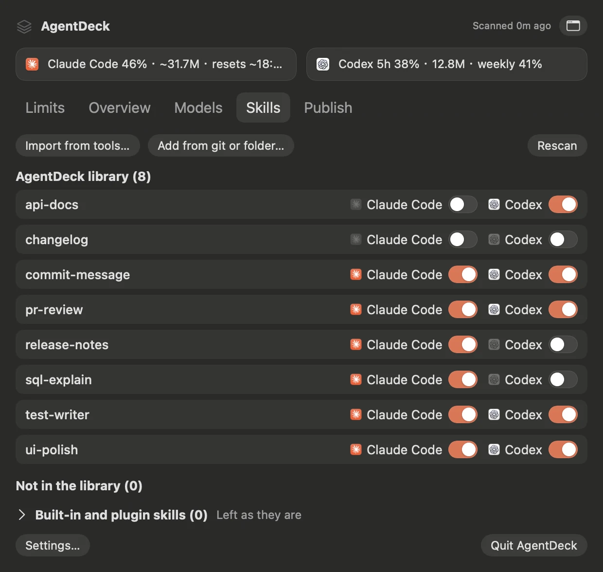
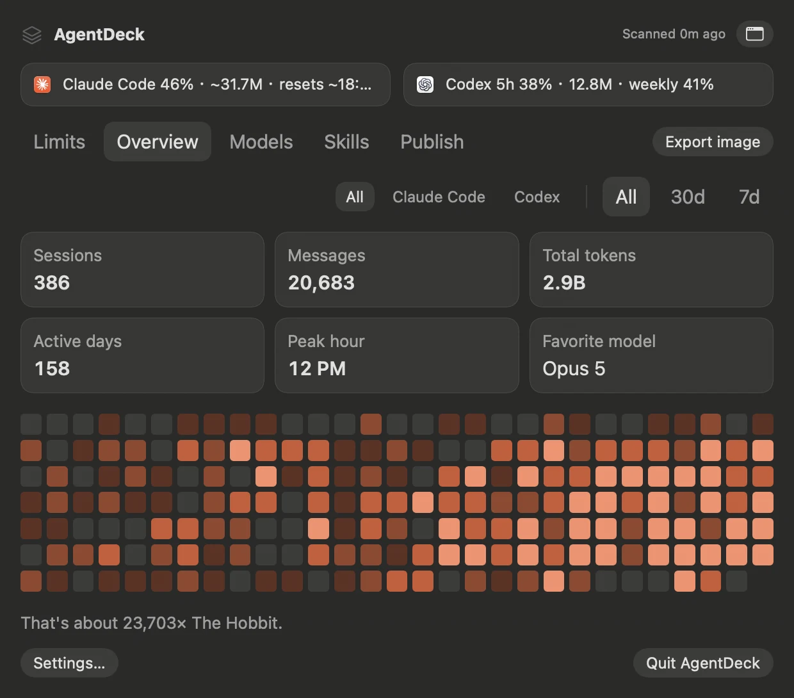

5-hour and weekly limits
Percent used and tokens side by side, with the reset time. Codex reports its own numbers. Claude's are checked with Claude every 5 minutes, the way Claude Code's /usage does; offline, AgentDeck estimates them from your logs.

AgentDeckFree, open-source menu bar app for Claude Code and Codex · macOS
AgentDeck reads the logs Claude Code and Codex already write on your Mac. It shows how much of each 5-hour and weekly limit you have used and when it resets, and keeps one skill library for both tools. No account to create.
Everything it does

01 — Features
Percent used and tokens side by side, with the reset time. Codex reports its own numbers. Claude's are checked with Claude every 5 minutes, the way Claude Code's /usage does; offline, AgentDeck estimates them from your logs.
Sessions, messages, tokens, active days, busiest hour and most-used model, filtered by tool and date range.

Per model, per day. Claude Code writes one reply as several log lines; AgentDeck counts it once.

Off by default. Publish a usage card to your GitHub profile or a data file for your website. It holds totals only: no paths, prompts or project names. You see the changes before every push.

Small, medium and large sizes with countdowns, every limit as a bar, and daily tokens for the last two weeks.

02 — Skills
Each tool has its own skills folder. AgentDeck keeps your skills in ~/.agentdeck/skills, and you switch each one on per tool.

Give a skill to Claude Code, Codex or both. Claude Code gets a copy, because the Claude app skips linked folders; Codex gets a link. When you edit a skill in the library, the copies are updated.
Import from the tools' skills folders, a local folder or a git repository. When two skills share a name but differ, you see a diff and pick one.
AgentDeck lists what it will do before doing it. Replaced files are backed up with a RESTORE.txt, and the library is a git repository, so every change has history.
Skills that come with Codex, plugins or the Claude app are listed but never changed. A skill pack shows as one row.
03 — Themes
Switch in Settings › Appearance. Each theme has a light and a dark version that follows your Mac.

04 — Privacy
AgentDeck only reads the logs Claude Code and Codex already write. It saves what it parsed in a local database, so your history is still there after Claude Code deletes transcripts older than 30 days.
No account and no analytics. AgentDeck goes online for two things only: checking Claude's usage with your Claude Code login (you can turn it off), and git push after you turn on publishing.
All of AgentDeck's data is in ~/.agentdeck. To back it up or remove it, copy or delete that folder.
05 — Install
Needs macOS 14 or later. Download the app, or build it from source.
AgentDeck
Needs Swift 6. The Command Line Tools are enough; you don't need Xcode.
git clone https://github.com/YilongWangBerlin/AgentDeck.git
cd AgentDeck && scripts/build-app.sh
ditto dist/AgentDeck.app /Applications/AgentDeck.app && open /Applications/AgentDeck.app
A build made on your own Mac opens without the Privacy & Security step. Open AgentDeck again from Spotlight to get a resizable window.